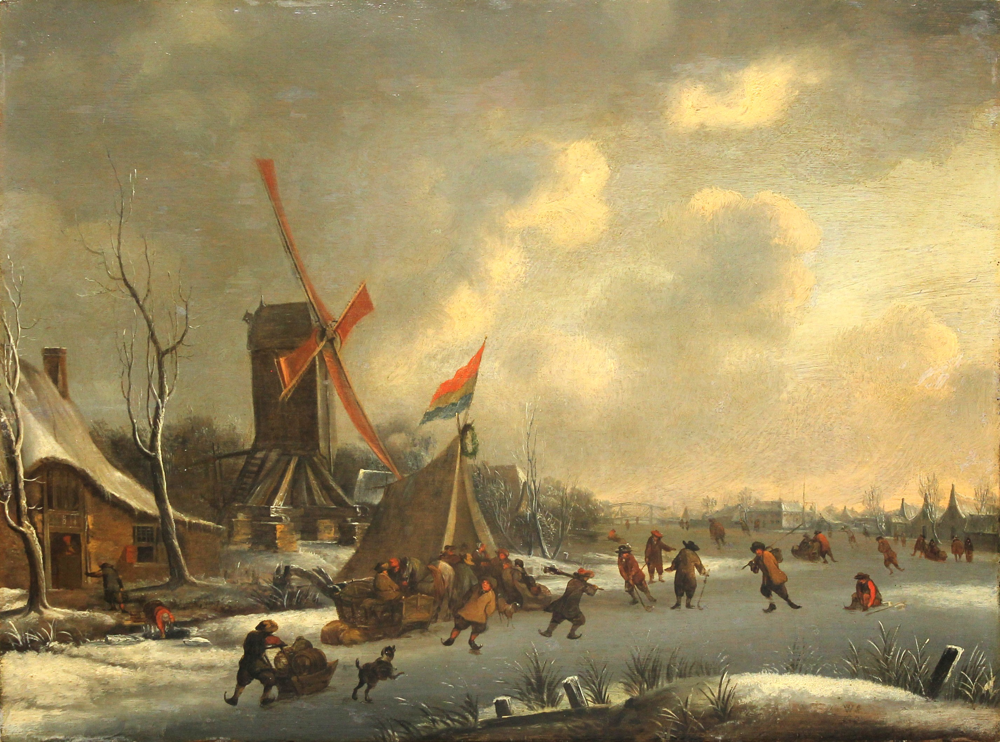
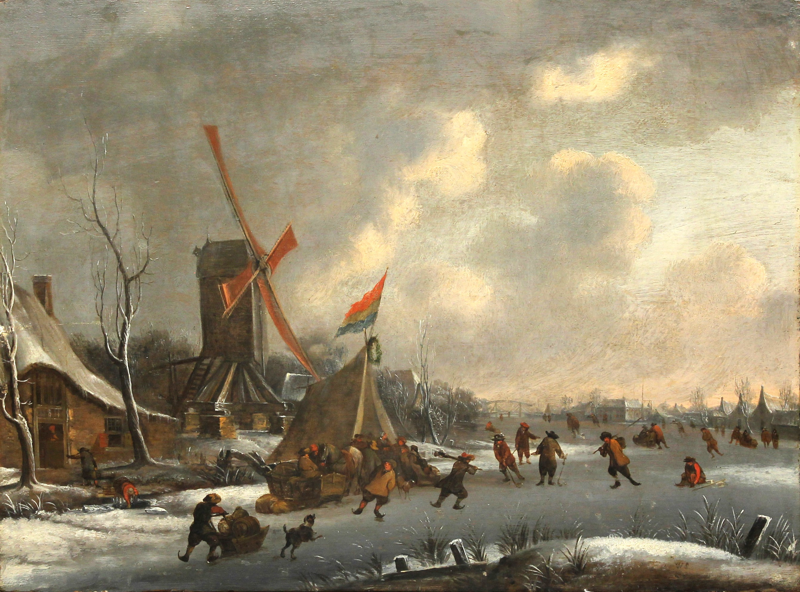

S. Augustino ecclesiae doctori, 2. polovica 18. storočia, Kňažský seminár sv. Gorazda v Nitre
Fotografie pred reštaurovaním a po reštaurovaní prednej a zadnej strany


Fotografie pred reštaurovaním a po reštaurovaní prednej a zadnej strany
Fotografie pred reštaurovaním, počas a po reštaurovaní


Fotografie pred reštaurovaním a po odstránení lakovej vrstvy
 Fotografie pred reštaurovaním a po reštaurovaní prednej a zadnej strany